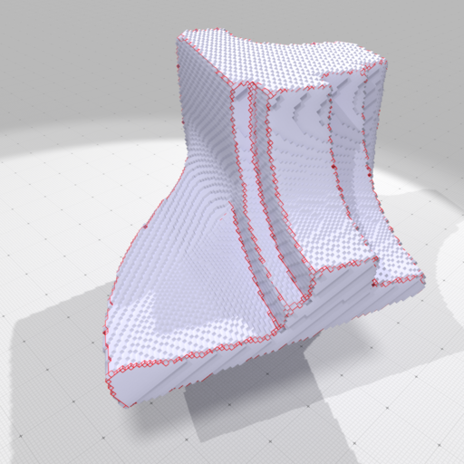

Table of Contents
- Author(s) of this documentation:
- Jacques-Olivier Lachaud, Marion Foare, David Coeurjolly, Pierre Gueth
- Since
- 1.1
Part of package DEC package.
- related classes: ATSolver2D
- related examples: exampleSurfaceATNormals.cpp
The Ambrosio-Tortorelli functional
The Ambrosio-Tortorelli functional (AT) is a classical relaxation of the Mumford-Shah functional [5]. Its purpose is to construct a piecewise smooth approximation of a function \( g \) defined in an open bounded domain \( \Omega \).
In the Ambrosio-Tortorelli functional, one wants to find a function \( u \in SBV(\Omega) \) which is a smooth approximation of the input data \( g \) (i.e. image in image processing applications). The Ambrosio-Tortorelli functional is defined by
\[ \displaystyle AT_{\varepsilon}(u,v) = \int_\Omega \alpha |u-g|^2 + v^2 |\nabla u|^2 + \lambda \varepsilon |\nabla v|^2 + \frac{\lambda}{4 \varepsilon} |1-v|^2 dx, \]
for functions \( u,v \in W^{1,2}(\Omega)\) with \( 0 \leq v \leq 1 \).
In AT functional, function \( v \) is a smooth approximation of the set of discontinuities, and takes value close to 0 in this set, while being close to 1 outside discontinuities. A remarkable property of this functional is that it \( \Gamma \)-converges to (a relaxation of) Mumford-Shah functional as \( \varepsilon \) tends to 0 (see [5]). The intuition is that a large \( \varepsilon \) induces a solution with a fuzzy set of discontinuities, which is then progressively narrowed to the crisp 1-dimensional set of discontinuites as \( \varepsilon \) goes to 0.
The AT functional has been extended to vector data in [47].
A discrete calculus model of AT and its optimization
A discrete calculus model of AT
We present a discrete calculus model of AT that works for any 2-dimensional cell complex. For more information on discrete calculus, discrete exterior calculus or discrete differential calculus, see module Discrete exterior calculus, report [41], lecture [37], or the book [49] .
Our model is suited to a grid domain representing a 2D image made of pixels or a digital surface in 3D.
\[ \displaystyle AT(u,v) = \alpha \Sigma_{i=1}^n \langle u_i - g_i , u_i - g_i \rangle_2 + \langle v \wedge \bar{\mathbf{\star}} \bar{\mathbf{d_0}} \mathbf{\star} u_i, v \wedge \bar{\mathbf{\star}} \bar{\mathbf{d_0}} \mathbf{\star} u_i \rangle_1 \\ + \lambda \varepsilon \langle \mathbf{d_0} v , \mathbf{d_0} v \rangle_1 + \frac{\lambda}{4\varepsilon} \langle 1 - v , 1 - v \rangle_0. \]
For more details about discrete formulations and the numerical optimization of AT, we refer the reader to [26], [46] and [45].
Solutions to AT
The AT functional is a sum of quadratic terms, independently, but not simultaneously, convex in \( u \) and \( v \). It must have null derivative at optimum. We thus propose to alternatively solve for \( u \), then \( v \). The derivatives can be given explicitly as linear systems. To simplify notations, let \( \mathbf{A} := \mathbf{d_0} \), \( \mathbf{B} := \mathbf{d_1} \), \( \mathbf{A'} := \bar{\mathbf{\star}} \bar{\mathbf{d_1}} \mathbf{\star} \) and \( \mathbf{B'} := \bar{\mathbf{\star}} \bar{\mathbf{d_0}} \mathbf{\star} \).
We define \( \mathbf{M} \) the matrix which transforms a 0-form into a 1-form by averaging the values on the two edge extremities, i.e. \( \mathbf{M} = \frac{1}{2} |\mathbf{d_0}| \). It is used in the wedge product between 0-form v and 1-forms \( \bar{\mathbf{\star}} \bar{\mathbf{d_0}} \mathbf{\star} u_i \).
We get at optimum, if we assume trivial metrics:
\[ \displaystyle \left\{ \begin{array}{r @{=} l c} \left[\alpha \mathbf{Id} - {\mathbf{B'}}^T diag(\mathbf{M} v)^2 \mathbf{B'} \right] u & = \quad \alpha g & (1.1) \\ \left[ \frac{\lambda}{4\varepsilon} \mathbf{Id} + \lambda \varepsilon \mathbf{A}^T \mathbf{A} + \mathbf{M}^T diag(\mathbf{B'} u)^2 \mathbf{M} \right] v & = \quad \frac{\lambda}{4 \varepsilon} \mathbf{1} & (1.2) \end{array}\right. \]
for the derivative of AT. Since all matrices are symmetric, definite and positive, we use a Cholesky factorization to solve alternatively the two equations of each system.
Gamma-convergence optimization algorithm
\( \begin{array}{l l l l} \rlap{OPTIMIZE-AT01( (g_1, ..., g_N ): 0-forms, (\alpha, \lambda, \varepsilon_1, \varepsilon_2, \varepsilon_r): reals );} \\ \rlap{\mathbf{Var~} (u_1, ..., u_N): 0-forms, (v, v'): 1-forms, \varepsilon: real ; } \\ \rlap{\mathbf{begin}} & \\ & \rlap{\mathbf{foreach~} i \in \{1, 2, 3\} \mathbf{~do~} u_i \leftarrow g_i;} \\ & \rlap{v \leftarrow 1, \varepsilon \leftarrow \varepsilon_1;} \\ & \rlap{\mathbf{while~} \varepsilon \geq \varepsilon_2 \mathbf{~do~}} \\ & & \rlap{\mathbf{repeat}} \\ & & & v' \leftarrow v; \\ & & & \hbox{Solve Eq.(1.1) for all } u_i ; \\ & & & \hbox{Solve Eq.(1.2) for } v ; \\ & & \rlap{\mathbf{until~} ||v - v'|| \hbox{~is small;}} \\ & & \rlap{\varepsilon \leftarrow \varepsilon / \varepsilon_r;} \\ & \rlap{\mathbf{end}} \\ \rlap{\mathbf{end}} \end{array} \)
Applications and code
The AT functional is useful when trying to fit piecewise-smooth function to some input data, possibly corrupted with noise. It is therefore used in image processing for denoising [46] or for inpainting [45] . It can also work for approximating vector data, for instance a normal vector field [26] .
Piecewise smooth approximation of normal vector field and feature detection
We show here that the AT functional can enhance a coarse approximation of the normal vector field onto a digital surface. Here, we compute such a normal vector field using Integral Invariant methods (see Integral invariant curvature estimator 2D/3D). It has the drawback to smooth normals around sharp features. Therefore, in example exampleSurfaceATNormals.cpp, we use the AT functional to compute a piecewise smooth approximation of this normal vector. Normals are smoothed everywhere except around sharp features where they have sharp transitions. Furthermore, the set of discontinuities of AT functional (places where primal 0-form v is close to 0) indicates where are located sharp features onto the digital surface.

Features (in red) extracted by AT model | 
Piecewise smooth normal vectors (colored) extracted by AT model | 
Piecewise smooth normal vectors (sticks) extracted by AT model |
To detail a little bit how to do that, you have first to build a digital surface. For instance, you can use Shortcuts to do so quickly (see Shortcuts (for the impatient developper)):
Then you just have to build a discrete calculus over the domain where you want to compute your piecewise smooth approximation. Here, we build the calculus over the whole surfel range surfels:
After that, the AT solver can be build on this calculus. Then it is initialized with input data you wish to approximate (here the normal vector field ii_normals). Finally it suffices to call the method ATSolver2D::solveGammaConvergence to use the coarse-to-fine \( \Gamma \)-convergence optimization method.
You recover the piecewise-smooth approximation of the input vector field with ATSolver2D::getOutputVectorFieldU2, and the function giving the locii of discontinuities with ATSolver2D::getOutputScalarFieldV0.
See exampleSurfaceATNormals.cpp for more details.
Using shortcuts for the impatient
You may also avoid using ATSolver2D directly and instead use method ShortcutsGeometry::getATVectorFieldApproximation or ShortcutsGeometry::getATScalarFieldApproximation which directly builds the calculus onto the given surface and outputs the results.